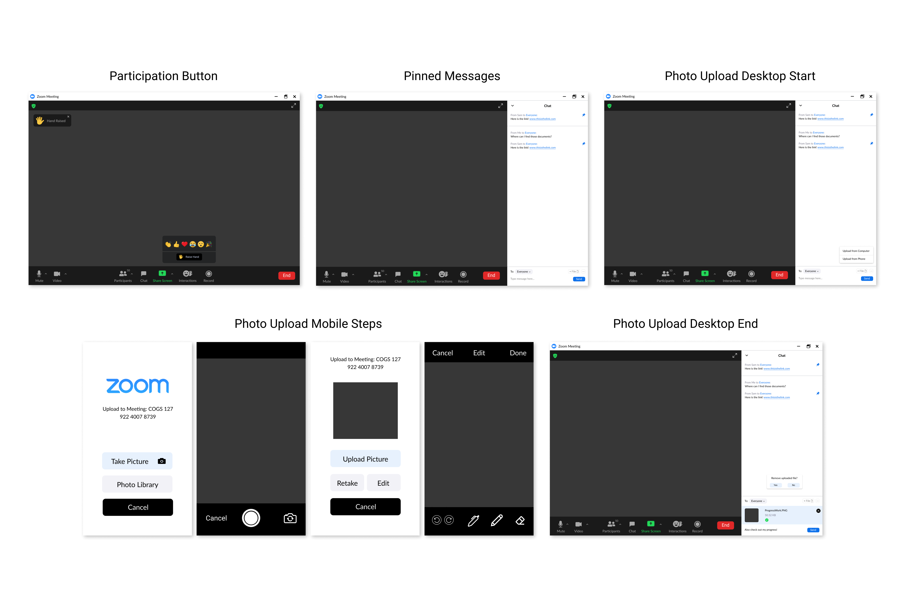

Project Overview

3 Months (Oct - Dec 2020)

Solo Project | UX Researcher, UI/UX Designer
During this project, I utilized user research and empathetic design to improve current features and ideate new features to enhance the remote learning experience for K-12 students on Zoom.
While learning remotely, younger K-12 students need a way to stay engaged with class content and efficiently communicate with their teachers and classmates in order to recieve better quality of feedback and education (needed to move forward academically).
Background
Younger K-12 students are at a great disadvantage when learning remotely as they may struggle with the limitations of collaborating online.
- They must use new technology they might not understand yet and will not receive the hands-on experience that they need.
- They’re unable to communicate their ideas or frustrations as effectively as they could in person.
- They won’t have their parents to help them directly when they’re stuck on a problem or having a hard time understanding class content.
Due to these issues, students will not receive the quality of education needed for them to prepare for future classes.
My parents have witnessed these issues with my younger siblings (elementary and middle school) and have expressed their worries to me. From concerns about my younger siblings’ ability to academically progress during the Covid-19 pandemic, I chose to redesign Zoom in hopes of developing features that could improve the remote learning experience for similar students. I wanted to enhance their ability to use technology and learn efficiently while separated from their teachers and classmates.
User Research
Through user research I wanted to discover the main applications that young students use for remote learning and the most significant issue that is arising while they use those applications. I used two research methods: a survey and interviews.
Survey - 33 Participants
I conducted a survey to discover the online tools students are using for remote learning, their pain points about those tools, and what they believe the tools are missing or could have. This survey was shared online and requested responses from teachers, parents, and older siblings about their students’ experiences with remote learning. However, responses were accepted from anyone which resulted in a majority of responses from college students.
Interviews - 3 Participants
I interviewed three participants, two middle school students and one college student. Although I was not focused on Zoom at this point, all interviewees happened to utilize Zoom as their primary application. I asked them to describe their typical day with remote learning, which features of the app they use, what they like and dislike about the tool, how remote learning compares to regular school and what might improve their experience.
From my interviews, I identified two major concerns of students while participating during online class and communicating with other students and teachers:
Students want more ways to participate during class so that it can become more engaging. It is quite difficult to focus on class when there are so many distractions on both the computer and the home environment. Having more methods to react, comment, or indicate the desire to participate could give students more action options rather than just staring at the computer screen during class.
Students want a way to effectively communicate their work and ideas in a way that would allow correction and feedback from others. For younger students, most of their work is done on paper and requires written work and answers. There is currently feature on Zoom that allows the students to share this work other than holding it up to a screen.
Low Fidelity Prototype
My low-fidelity prototype was designed based on the previous user flows. This prototype will allow users to use the raise hand function, pin messages, and send photos from their phones. The basic layout of the prototype differs only slightly from the original ui sketches, but the functionality of each feature is more thought out.
For the participation button, there is a hand icon on the top left corner instead of text indicating that the user is raising their hand. The user is able to ‘put their hand down’ by clicking the x by the raised hand.
The pinned message feature is basically the same from the ui sketch, except there is a pin icon next to the pinned massage. Clicking this again will remove the message from the pinned list.
For the photo upload feature, I reconsidered the current design for uploading files and added my feature to match. The file button will remain the same, but there is an option to upload from the computer or from the phone. Choosing the phone method is the main functionality of my additional feature. The user will be notified on their phone to upload a picture and it will transfer to their computer zoom application. Each option presented to the user is placed based on which function will be used most. I decided not to continue with the screenshot or the saved message functions because there are other options to do so.
High Fidelity Prototype

Changes made from the low-fidelity prototype to the high-fidelity prototype were not drastic, but have increased understanding and efficiency for the features introduced. I took into consideration the need for confirmation while features are being used. I needed to make it obvious when features are currently active so users don’t think otherwise. These are the changes I made from the user testing results:
1) Participation Button
- The “reactions” button is now labeled “interactions”
- “Interaction” button has a smiley face and hand icon
- The indication for raising your hand now has text as well
2) Pinning Message
- Blue pin icon when message pinned (Both in general chat and at the top pinned section)
- Confirmation when unpinning a message
3) Upload Photo
- Send button added to messages
- Switched take picture and photo library on phone screen
- Meeting name and number shown on phone screen before uploading
- File name/type/size shown before sending to chat
- Confirmation when removing uploaded file
User Testing - Phase 2
Prototype Improvements